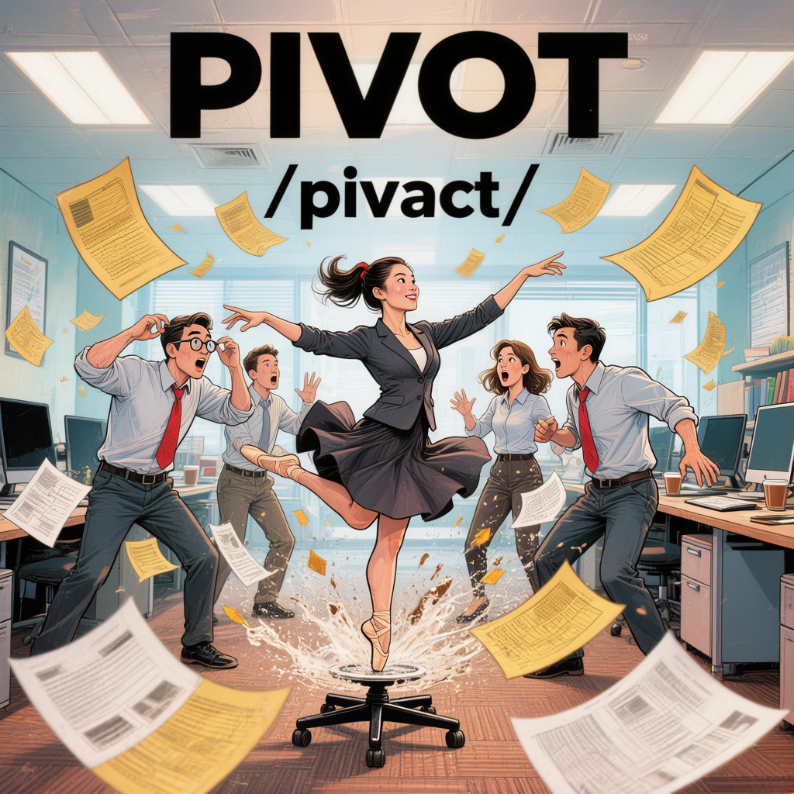
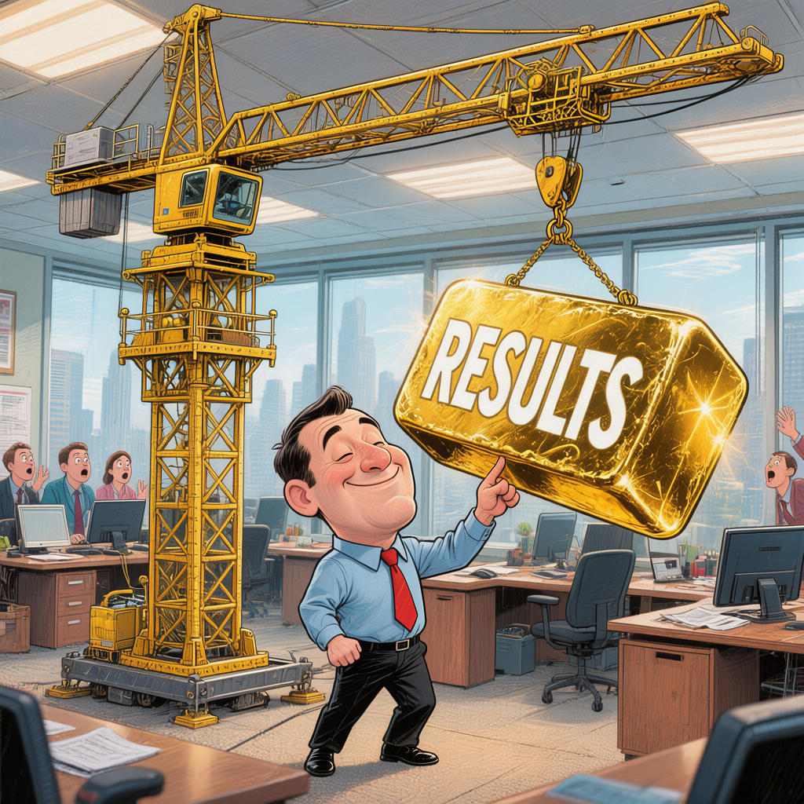
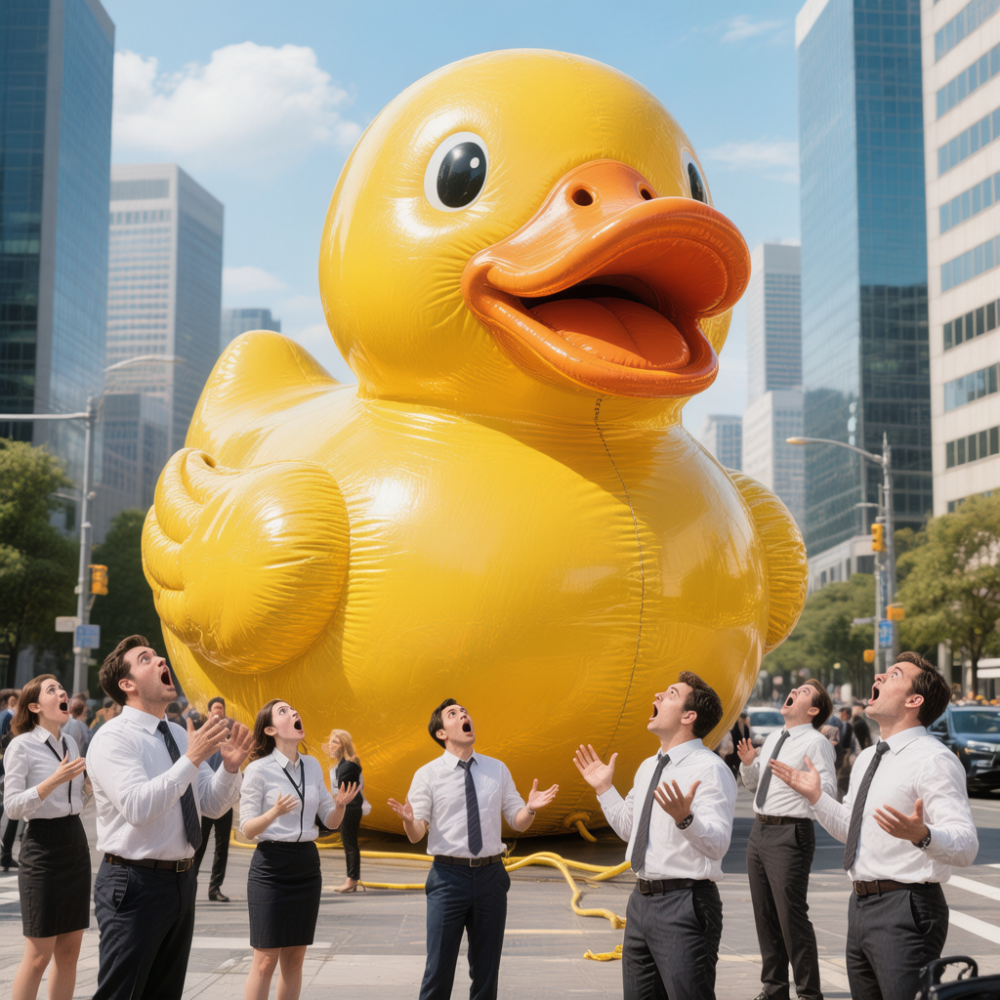

📚 每日职场英语单词
2026年3月31日 · 星期二 · 今日精选5个高频职场词汇
1
Streamline
/ˈstriːmlaɪn/
▶
v. 精简；使流程高效化； streamline 是把流程"变成流线型"，去掉多余环节
例句 Example
We need to streamline our approval process to reduce the turnaround time from two weeks to three days.
▶
我们需要精简审批流程，将周转时间从两周缩短到三天。
💡
记忆小贴士
想象一条"流线型"（stream）的小船在河里飞速前进——因为去掉了所有多余的阻力。工作中也一样，streamline 就是砍掉繁琐步骤，让事情跑得更快！
2
Leverage
/ˈlevərɪdʒ/
▶
v./n. 利用；杠杆作用；在职场中指充分利用资源、关系或优势来达成目标
例句 Example
She leveraged her extensive network to secure partnerships with three major clients in the first quarter.
▶
她利用自己广泛的人脉网络，在第一季度就成功与三个大客户达成了合作。
💡
记忆小贴士
杠杆（lever）+ 年龄（age）= leverage。想象一个老爷爷用一根小杠杆撬动了一块巨石——这就是"杠杆效应"。职场中说 "leverage your skills" 就是用你的技能当杠杆，撬动更大的成果！

3
Pivot
/ˈpɪvət/
▶
v./n. 转变方向；战略调整；原指旋转中心轴，职场中常指公司或项目方向的重大转变
例句 Example
The startup had to pivot from a consumer app to an enterprise SaaS model after analyzing market feedback.
▶
在分析市场反馈后，这家创业公司不得不从消费者应用转向企业SaaS模式。
💡
记忆小贴士
想象一个芭蕾舞演员在办公室的转椅上优雅地旋转——一个华丽的转身就是 pivot！在创业圈，"pivot" 就像篮球中的转身变向：原来的路走不通了，换个方向继续前进。

4
Scalable
/ˈskeɪləbl/
▶
adj. 可扩展的；可缩放的；指系统、业务或团队能够在不增加太多成本的情况下扩大规模
例句 Example
Our cloud infrastructure is fully scalable, so we can handle a 10x increase in traffic during peak seasons without any downtime.
▶
我们的云基础设施完全可扩展，因此在高峰季节可以处理10倍的流量增长，而不会出现任何停机。
💡
记忆小贴士
想象一只小黄鸭被吹气膨胀到摩天大楼那么大——它膨胀了但还是鸭子！scalable 的核心就是：变大变强，但本质不变。投资人最爱问的就是 "Is this scalable?"

5
Synergy
/ˈsɪnədʒi/
▶
n. 协同效应；增效作用；指不同部分合作后产生的大于各自单独效果之和的整体效果（1+1>2）
例句 Example
The merger created remarkable synergy between the two companies' R&D teams, leading to three breakthrough patents within a year.
▶
这次合并在两家公司的研发团队之间产生了显著的协同效应，一年内就取得了三项突破性专利。
💡
记忆小贴士
Syn（共同）+ ergy（能量）= synergy，合起来就是"共同释放能量"。想象两个人击掌时掌心迸发出闪电——这就是协同效应！职场黑话第一名，开会必备词汇： "Let's create synergy!"